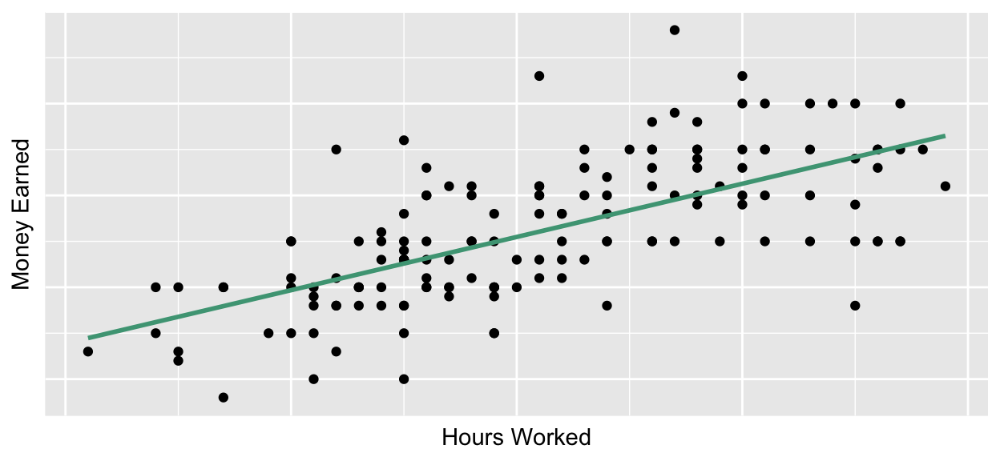

Intro to Today’s Lab
During today’s lab, you’ll apply the concepts discussed during this week’s lecture. Each lab consists of a range of tasks, with corresponding questions you can answer. Please note that the questions are not required and not marked, although they do provide a helpful source of formative feedback that will help you gauge your understanding.
Learning Objectives
At the end of this lab, you will be able to:
- Understand what is meant by ‘intercept’ and ‘slope’
- Identify hypotheses which may be tested using regression
- Test the assumptions of a regression
- Use SPSS to run multiple linear regression
- Properly interpret and report multiple linear regression analysis
- Run a power analysis for linear regression
- Produce an APA-style correlation matrix
Introduction to Regression
Linear models assume the relationship between variables can be best captured with a straight line. In many cases, this assumption holds true:

The straight line in this plot represents a ‘fit line’, which is the
line that best represents the data. Specifically, it’s the line that
minimises the total distance between all observations and the line
itself.
The fit line of a regression model has two key
characteristics:
Intercept: the point on the line where it crosses the \(y\)-axis (where \(x\) = 0)
Slope: the rate of change in the line
Your Task
Experiment Overview
You’ll be working with data adapted from this
study in which the researchers investigated the factors associated
with well-being in University students.
In this experiment, you recruited a sample of university students and administered several scales to capture your variables of interest. Specifically, you measured participants’ well-being, their level of social support, their weekly physical activity, and their sleep per week. On each variable, higher scores correspond to higher levels.
You can download the dataset from this experiment here. It contains the following variables:
| Variable Name | Description |
|---|---|
| Age | Age in years |
| Gender | Levels: Female; Male; Nonbinary; Other; Prefer not to Disclose |
| PhysicalActivity | Amount of physical activity per week in hours |
| Sleep | Amount of sleep per week in hours |
| SocialSupport | Scores on a social support scale; values may range between 0-45 |
| Wellbeing | Scores on a well-being scale; values may range between 0-40 |
You’ll be investigating whether physical activity, sleep, and social support predict students’ wellbeing.
Your Tasks
Click here for a hint
With regression, it’s common to refer to variables as predictors and outcomes rather than independent and dependent variables. However, the predictor variables equate to the independent variables, and the outcome equates to the dependent variable.
Click here for the solution
Possible Research Questions:
Do physical activity, sleep, and social support significantly predict well-being in university students?
Predictors: Physical Activity; Sleep; Social Support
Outcome: Well-being
Hypotheses:
General:
Here is an example of the overall hypothesis:
\(H_0:\) Sleep, physical activity, and social support do not predict well-being in university students.
\(H_1:\) Sleep, physical activity, and social support significantly predict well-being in university students.
Here is an example of a hypothesis that references a specific predictor:
\(H_0:\) Sleep does not predict well-being in university students when controlling for the effects of physical activity and social support.
\(H_1:\) Sleep predicts well-being in university students when controlling for the effects of physical activity and social support.
Statistical:
\(H_0: \beta_{x_i} = 0\)
\(H_1: \beta_{x_i} \neq 0\)
Data Review
Before running any analyses, you should first check your data. In many cases, some kind of cleaning or data wrangling will be necessary. For instance, are there any missing values? Do you have any unexpected values or extreme outliers? Do you need to create a variable from the existing data (e.g., a summary metric for a cognitive task)? These things should be dealt with before conducting the analyses.
Additionally, you’ll need to compute descriptive data. You’ll do this for both your main variables of interest and your sample’s demographic data, as this must be included in the Sample portion of your Methods section.
Your Tasks
Click here for a hint
For continuous variables, the descriptive statistics you’ll want to check are mean and standard deviation. It’s also useful to check the minimum and maximum so you can easily identify values outside of your expected range. For categorical variables, you’ll check the frequency of participants in each group. It may also be useful to check the mode.
Click here for the solution
To check that your variables are labeled as the correct scale of measurement, look at the Measure column under the Variable View tab.
Age- ScaleGender- NominalPhysicalActivity- ScaleSleep- ScaleSocialSupport- ScaleWellbeing- Scale
In this instance, SPSS assigned the proper measures by default. No changes are required.
Check
Descriptive Statistics
Categorical Variables: The only categorical
variables in this week’s dataset is Gender. Click
Analyze>Descriptive Statistics>Frequencies, then add
Gender to the ‘Variable(s)’ box. Make sure ‘Display
frequency tables’ is checked, then click ‘OK’. You should see the
following output:

Continuous Variables: All remaining variables are continuous. Click Analyze>Descriptive Statistics>Frequencies, then add these two variables to the ‘Variable(s)’ box. Make sure ‘Display frequency tables’ is not ticked, then click ‘Statistics’. Tick ‘Mean’, ‘Std. Deviation’, ‘Minimum’, and ‘Maximum’. Click ‘Continue’, then ‘OK’. You should see the following output:

Check Assumptions
You can remember the requirements/assumptions of linear regression by remembering LINE.
Linearity: All predictors variables have a linear relationship with the outcome variable.
Independence of Observations: Individual observations should not be dependent upon any others
Normality: Model residuals are normally distributed
Equal Variance (AKA Homoskedasticity or Homogeneity of Variance): the variance is consistent across both predictor values & fitted values
No Multicollinearity: Predictors should not be highly correlated with each other (e.g., \(r\) > .8)
Your Tasks
You can assume independence is met, as it’s something that’s accounted for through good study design rather than statistically.
Click here for a hint
You can actually check all assumptions when setting up your model, so you’ll get output for assumptions checks and overall model results at the same time.
To check for normality, you can view a P-P plot of the residuals. To check for linearity and heteroskedasticity/equal variance, you will look at a plot of residuals by predicted values. To check for multicollinearity, you’ll check the Variance Inflation Factor (VIF). VIF values greater than 5 suggest issues with multicollinearity.
Click here for the solution
To check assumptions (and run the regression analysis), navigate to
Analyze > Regression > Linear. Add your outcome variable,
Wellbeing, to the ‘Dependent’ box and your predictors,
SocialSupport, Sleep, and
PhysicalActivity to the ‘Independent(s)’ box.
To produce the P-P plot and the plot of residuals by predicted values, click ‘Plots’, move the ZRESID variable (which reflects the standardized residual) into the Y box and the ZPRED variable (which reflects the standardized model-predicted value of well-being for each individual) into the X box. Make sure ‘Normal probability plot’ is ticked:

Click ‘Continue’. To check for multicollinearity, click ‘Statistics’ and tick ‘Collinearity diagnostics’:

Click ‘Continue’ and then ‘OK’. Your model will run, and you will also get the information you need to check assumptions.
First, have a look at the P-P plot:

If the data are generally normal, the points will follow the diagonal line. Here, that’s exactly what is happening, so the data meet the assumption of normality.
Next, have a look at the residuals by predicted values plot:

The datapoints should look like a random cloud centering around the
middle. If there are any strange patterns (a fan shape or a bow-tie),
then the assumption of equal variance is violated. If the pattern is
curved in some way, the association between Wellbeing and
the predictors may not be linear. Here, the data look nice and
cloud-like, so the data seem to meet the assumptions of linearity and
equal variance.
To check for multicollinearity, look for correlation values greater than .8 in the correlation table:

You can also check that the VIF values at the end of the coefficients table are less than 5:

All of these criteria are met, so the data do not appear to exhibit multicollinearity.
All checks look good, so you can move on to interpreting the primary results.
Primary Analysis
As you are testing whether multiple predictor variables can predict a single, continuous outcome, you’ll use results from multiple linear regression to provide statistical support for your hypotheses. In this analysis, you’ll test whether your overall model significantly predicts well-being. You’ll then check the effects of each predictor individually.
Your Tasks
Click here for a hint
To perform a linear regression, navigate to Analyze > Regression > Linear.
Click here for the solution
To run the regression analysis, navigate to Analyze >
Regression > Linear. Add your outcome variable,
Wellbeing, to the ‘Dependent’ box and your predictors,
SocialSupport, Sleep, and
PhysicalActivity to the ‘Independent(s)’ box. Click
statistics and check the following boxes:
Click ‘Continue’, then ‘OK’.
The first piece of output is a recap of the descriptive statistics for each variable in your model:

The next two boxes you will focus on are the Model Summary and ANOVA boxes:

First, check the Model Summary box, which provides \(R^2\) and \(R^2_{adj}\). I recommend defaulting to Adjusted \(R^2\), as it is just a version of \(R^2\) that’s been adjusted by the number of predictors in the model, so it’s less biased by models with a large number of predictors. Here, where we only have a few predictors, these numbers aren’t that different, but when you have larger models, there can be quite a change between the two.
The \(R^2_{adj}\) value is .36, which indicates that 36% of the variance in our sample’s well-being scores is accounted for by sleep, physical activity, and social support.
The ANOVA tells us the results of our overall model test (is this model significant?). You interpret this in the same way you would a typical ANOVA - the \(p\)-value is < .001, so we can say the overall model significantly predicts well-being scores. In other words, when we have data on someone’s sleep, physical activity levels, and social support network, we have a better idea about what their well-being may be than if we didn’t have this information.
Next, have a look at the ‘Coefficients’ box, which has information about individual predictors:
By looking at the \(p\)-values in
the ‘Sig.’ column, we can see the values associated with
Sleep and SocialSupport are lower than the
\(\alpha\) threshold of .05, indicating
that these two variables significantly predict well-being. The \(p\)-value associated with
PhysicalActivity is greater than .05, so it is not
significant. The \(\beta\) estimates
give us a better sense of the relationship between the individual
predictors and the outcome.
For example, the unstandardized \(\beta\) coefficient associated with
Sleep is 0.37. The unstandardized \(\beta\) coefficient tells us how much the
outcome variable changes with every 1-unit change in the predictor.
Sleep was measured in hours per week. This means that for every
additional hour of sleep someone gets per week, we would expect their
well-being scores to increase by 0.37 points.
The standardized \(\beta\) coefficient can be interpreted the same way, but in standard deviation units rather than raw values.
Note that even though we have a \(\beta\) coefficient associated with
PhysicalActivity, we would not interpret it in this way, as
PhysicalActivity was not a significant predictor of
Wellbeing, meaning that we can’t say with any certainty
that this \(\beta\) value is
meaningfully different than 0.
Power Analysis
Click here to use WebPower to run your analysis.
Your Task
\[R^2 = \frac{f^2}{f^2+1}\]
Bonus Task
\[f^2 = \frac{R^2}{1-R^2}\]
Click here for a hint
Webpower has an option through which you can enter the \(R^2\) value and it will calculate \(f^2\) for you.
Click here for the solution
For the sensitivity analysis, navigate to the webpower site and choose ‘Linear Regression’ from the menu:

Enter in the relevant information and click ‘Calculate’ to get the results:

To figure out how this relates to the \(R^2\) of your model, convert from \(f^2\):
\[R^2 = \frac{f^2}{f^2+1} = \frac{.02}{.02+1} = .02\] In this case, it’s the same, but that won’t always be true, so it’s important to always convert between effect sizes.
For the bonus power analysis, enter in the relevant information and click ‘Calculate’ to get the results:

Note that you can click ‘Show’ next to effect size and use the calculator there to get \(f^2\) from \(R^2\), or you can use the following equation:
\[f^2 = \frac{R^2}{1-R^2} = \frac{.13}{1-.13} = .15\] Whatever you choose, you’ll need 77 participants, given the other criteria.
Interpret & Report
Now that you’ve completed the analyses, write a mini results section describing your findings. In this section, please:
Give a brief description of your sample as you would in a methods section.
Report your results and a provide an interpretation in APA style.
It is common to also include a table with the correlations between each variable included in the model. Please create an APA-style correlation table.
Click here for a hint
There are many ways you could write this up, but you should at least include the following information:
- alpha level
- number of participants (n)
- participant demographics (mean age, age \(SD\), and age range of sample; gender distribution of sample)
- descriptive data for each variable (\(M\) & \(SD\))
- the type of test used
- \(R^2\) and its interpretation
- the overall model test results (\(F\), \(df\), \(p\))
- individual predictor results (either \(B\) or \(\beta\), appropriate interpretation, either the standard error or confidence intervals, \(p\) values)
See here for an example of an APA-style correlation table.
Click here for the solution
In this study, we investigated the association between well-being in university students and the lifestyle factors of sleep, physical activity, and social support. We hypothesised that these factors would significantly predict scores on a well-being assessment. To test this, we performed multiple linear regression with wellbeing scores as an outcome variable and hours of sleep per week, hours of physical activity per week, and scores on a social support questionnaire as predictors. \(\alpha\) was set at .05 for all analyses. A power analysis indicated that 600 participants would provide 80% power to detect an \(R^2 = .02\) with \(\alpha\) = .05 using a linear regression with 3 predictors.
Our final sample consisted of 600 university students between the ages of 17 and 26 (\(M\) = 21.49, \(SD\) = 2.61; 297 females, 281 males, 7 nonbinary participants, 5 participants who indicated a gender other than these categories, and 10 who preferred not to disclose). The normality assumption was checked through visual assessment of a P-P plot of the residuals. Linearity and homoskedasticity were checked using a residuals by predicted values plot. VIF scores and correlations were used to evaluate the presence of multicollinearity. The data met all assumptions.
Our results indicate that, altogether, sleep, physical activity, and social support significantly predicted well-being, \(F\)(3,596) = 112.21, \(p\) < .001, explaining 36% of the variance in student well-being scores. Both hours of sleep, \(\beta\) = .37, \(p\) < .001, 95% CI = [0.34, 0.41], and social support, \(\beta\) = .07, \(p\) = .006, 95% CI = [0.02, 0.11], were significant predictors of well-being. Specifically, for every additional hour per week of sleep, student well-being scores increased by .37 points. For every additional point on the social support scale, student well-being scores increased by .07 points. Hours of physical activity per week was not a significant predictor of well-being, \(\beta\) = .14, \(p\) = .239, 95% CI = [-0.09, 0.36]. See Table 1 for descriptive data and correlations between all variables in the analysis.